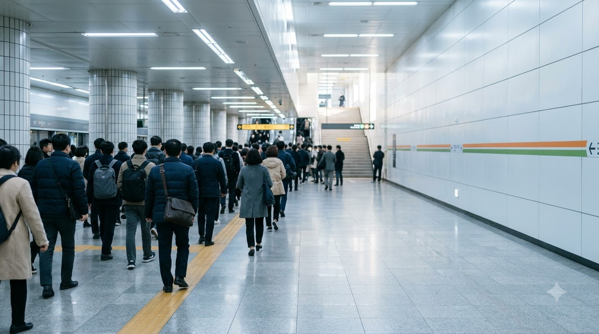

소요 시간
역간 주행시간과 환승 시간의 합
Concept · 부산 도시철도 1~4호선
지도 앱이 알려 주는 최단 시간이 아니라 몸으로 느끼는 피로를 기준으로 경로를 다시 계산했습니다. 열차 혼잡, 환승 보행, 착석 가능성을 공공데이터로 계산하고 오늘의 컨디션에 맞춰 경로 순위를 바꿔 보는 탐색기입니다.
지도 앱이 보여 주는 '최단 시간'과 '환승 1회'라는 숫자 뒤에는, 붐비는 환승 통로를 직접 걸어 건너고 만원 열차에서 버텨야 하는 승객의 발걸음이 숨어 있습니다.
Problem
지도 앱은 '가장 빠른 길'과 '환승이 적은 길'만 보여 줍니다. 환승 횟수만으로는 어느 쪽이 덜 지치는지 알 수 없습니다. 동래에서 센텀시티까지, 서면을 거치면 환승은 1회지만 부산에서 가장 붐비는 환승역을 지나야 합니다. 연산·수영을 거치면 환승은 2회지만 사람이 덜 몰립니다.
Framework
같은 20분이라도 서서 부대끼는 20분과 앉아 가는 20분은 다릅니다. 시간 하나로 경로를 줄 세우면 이 차이가 보이지 않습니다. 그래서 피로를 네 요소로 나눠 각각 점수로 만들었습니다. 시간만 보던 기준에 열차 안의 밀집, 환승 통로의 보행, 앉을 수 있는 확률을 더해 한 경로의 피로를 여러 면에서 따집니다.
역간 주행시간과 환승 시간의 합
구간별 혼잡률과 그 구간을 지나는 시간
환승 시간, 편의시설, 환승역의 인파 밀집
경로 위 역마다 하차가 승차보다 많은 정도
Data
공공데이터포털에서 받은 원본을 그대로 두고 스크립트로 가공했습니다. 이 프로젝트는 기준 시점이 제각각인 자료에서 출발했습니다. 자료의 시점은 2020년부터 2026년까지 걸쳐 있습니다.
Method
1호선 실측에 맞춰 보정한 모델을 2~4호선에 적용했습니다. 개찰구 승하차의 순유동(보존법칙), 편성 정원, 시간당 열차 수로 혼잡률을 계산합니다. 1호선 실측과의 상관은 0.91, 평균 오차는 6.2%p입니다.
혼잡률 산점도를 불러오는 중입니다
시간대별 절대 수준은 5~12%p 어긋납니다. 같은 호선 안의 상대 비교에 더 믿을 만합니다.
Method
네 지표를 0~100으로 맞추고 사용자의 가중치로 합칩니다. 점수는 부산 지하철 전체를 기준으로 한 고정 범위로 정규화해서 후보 경로가 바뀌어도 점수의 의미가 같습니다. 화면에는 100에서 뺀 '쾌적도'로 보여 줍니다.
Scenario A · 출근 08시
경로 카드
파동 그래프
Scenario B · 출근 08시
경로 카드
파동 그래프
경로 탐색 엔진을 연결하면 후보 경로 카드가 나타납니다.
경로별 스트레스 곡선이 겹쳐서 표시됩니다.
Overview
다섯 지표와 노선도 위에서 후보 경로를 겹쳐 봅니다. 시간, 쾌적, 환승, 착석, 체력이 경로마다 어떻게 갈리는지 한 화면에서 비교합니다.
시간·쾌적·환승·착석·체력 레이더 차트
1~4호선 개략도 위에 선택한 경로가 빛납니다.

Conclusion
두 시나리오 모두 환승이 하나 적은 서면 경유 경로가 가장 피로했습니다. 동래→센텀시티는 추정값을 흔들어도 결론이 유지됐고 모라→동래는 3호선 혼잡 추정에 따라 달라질 수 있습니다.